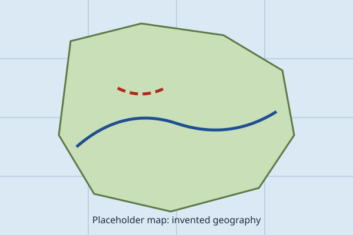

National Forecast Maps
Placeholder graphics, not real maps

Sample national discussion
This invented discussion explains the pattern shown on the maps: a trough over the coast, a ridge building over the Southern Basin, and a weak disturbance near the Teal Islands. It is written for layout testing only.